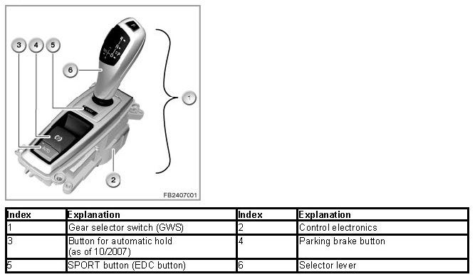
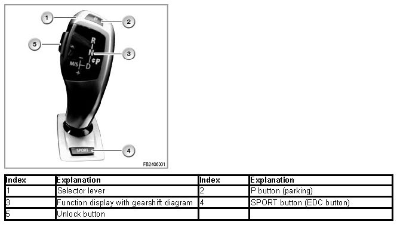
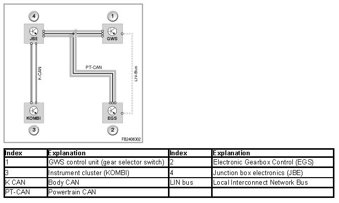

Gear Selector Switch
Gear Selector Switch
Gear selector switch
The gear selector switch (GWS) enables selection of a drive position of the automatic gearbox with Steptronic mode and Sport program. The gear selector switch is positioned in the front area of the centre console of the vehicle and is designed as a separate control unit.
Via the gear selector switch, the gearbox is no longer mechanically activated, rather electronically.
Brief description of components
GWS: Gear selector switch
The gear selector switch (GWS) consists of the control electronics circuit and the selector lever.
The SPORT button (EDC button) is integrated in the gear selector switch and can be replaced separately.
The sensors for recording the selector-lever position as well as interlocking for inadvertent gearshifts are integrated in the control electronics circuit.

Selector lever
The function display is integrated in the selector lever. Independently of the selector-lever position, the engaged drive position is displayed in the function display.

The selector lever can be used to select the following positions:
P for parking
Function "P" is to be set by operating a separate button on the gear selector switch.
R for reverse gear
N for Neutral
D for Drive = automatic mode
M/S "M" for manual operation = Steptronic; "S" for Sport program = automatic mode with sporting characteristic curves
An interlock prevents inadvertent shifts to position "R". To cancel the interlock, the brake must be operated by pressing the brake pedal and the unlock button pressed on the selector lever.
In the gear selector switch (GWS), a total of 3 actuators are used for the 3 interlocks.
An electric motor with downstream gearing is used for the automatic return from the manual gate into the automatic gutter as well as for interlocking the manual gutter.
A bidirectional, spring-centered twin magnet (electromagnet) is used for the interlock towards selector-lever position "R".
a single magnet (electromagnet) with spring is used for the interlock towards selector-lever position "D".
The interlocks are only supplied with current after terminal 15 On.
This ensures that no shifting path in the automatic mode is interlocked in the event of errors by the deployed actuators.
System functions
The following system functions are described for gear selector switch (GWS):
- Engaging a drive position
- Recording the selector-lever position
- Function indication
- Automatic return
Engaging a drive position
To engage a drive position after engine start-up, the selector lever must be pushed / overpushed backwards or forwards.
To engage the drive position R, alongside the brake operation, the unlock button on the side of the selector lever must be pressed.
Selector-lever position "P" is removed from the gearshift diagram by means of a separate button in the gear selector switch. When the P button is activated and the 'P engaged' signal comes from the electronic gearbox control (EGS), the green LED for the start position is activated in the function display of the gear selector switch by the gear selector switch.
The selector lever is mono-stable within the automatic gutter (automatic mode) and within the manual gutter (manual mode), i.e. it keeps returning perceptibly to its initial position.
The gutter change is bi-stable, i.e. the selector lever remains in the selected gutter. The gutter change into the manual gutter (selector-lever position "M/S") can only be carried out manually from selector-lever position "D" at any time.
If the P button is operated or the parking lock is automatically engaged by 'ignition off' and the gear selector switch is still in the manual gutter (selector-lever position "M/S"), an actuator is automatically activated to return the selector lever to the mono-stable initial position of the automatic gutter (automatic mode).
The forward direction of movement of the selector lever towards position 'R' and to the left towards position 'M/S' must be perceptibly blocked or released depending on the initial position and status of the unlock button.
- A movement into the manual gutter (selector-lever position "M/S") is only possible from selector-lever position "D".
- One touch forwards without the unlock button being operated is only possible from the selector-lever position "D" or selector-lever position "M/S".
- One touch forwards with the unlock button operated is also possible from selector-lever position "N".
- One touch backwards is possible (not from drive position "D").
- Overpressing forwards is only possible with the unlock button operated and only from the selector lever positions "D" or "N" and the mono-stable position of the selector lever.
- Overpressing backwards is possible (not from drive position "D").
The blocks only become active with terminal 15 and are deactivated in the idle state.
Recording the selector-lever position
The selector-lever position is picked up by means of sensors without contact and forwarded via PT-CAN to the gearbox control (EGS).
- 7 Hall sensors record the selector-lever position in the longitudinal direction of the vehicle
- 4 Hall sensors record the selector-lever position in the transverse vehicle direction
For reasons related to availability, these signals are additionally forwarded across a LIN bus to the Electronic Gearbox Control (EGS).

Function indication
The function display in the selector lever is designed as a gearshift diagram, indicating the positions "P", "R", "N", "D", "M/S". The engaged drive position is indicated in this shift diagram by means of LEDs.
The engaged drive position is only displayed in the gearshift diagram when the Electronic Gearbox Control (EGS) has implemented the driver request and the gear selector switch (GWS) has been notified of this status by means of a message across the bus.
The function display is active as long as the bus communication is active on the PT-CAN or LIN-bus.
Automatic return
The "automatic return" returns the selector lever locked in the manual gutter ('selector-lever position "M/S") to the automatic gutter (selector-lever position "D").
An electric motor is used as the actuator for the automatic return. A camshaft driven by the electric motor presses a slide against the selector lever. The slide returns the selector lever to the automatic gutter.
If the selector lever is located in the manual gutter (selector-lever position "M/S"), the actuator is not supplied with current. With an electrical impulse, the actuator releases the selector lever and returns it into the automatic gutter. The actuator is activated by the GWS control unit on the basis of the signal inputs from the electronic gearbox control (EGS).
Notes for Service department
General information
Emergency release of the parking lock
If the parking lock can no longer be released hydraulically, mechanical emergency release is possible. This enables the vehicle to be pushed or towed in an emergency.
WARNING: To tow the vehicle, release the parking lock of the vehicle manually.
If the vehicle is towed on all four wheels, the parking lock must be manually released using the emergency release process even if the gearbox control is functional. This means that the drive wheels cannot block.
WARNING: Engage the parking lock once again on parking the vehicle.
The parking lock must be re-engaged after parking the vehicle. If the parking lock is not engaged, there is a danger that the vehicle rolls away.
For emergency release, the mat in the left-hand drinks holder in the centre console must be removed. The procedure for releasing the parking lock is described in the Owner's Handbook.
Special situations (functions in the EGS)
Memory function for driving direction change
Driver request for selector-lever position "D" to selector-lever position "R" or from selector-lever position "R" to selector-lever position "D".
- At v ≤ 5 kph, the driver request is implemented by the electronic gearbox control (EGS).
- At 5 ≤ v ≤ 10 kph selector-lever position "N" is engaged by the electronic gearbox control; the display of the engaged drive position changes to the driver request for selector-lever position "D" or selector lever position "R".
The driver request is stored. If a speed of 5 kph is undershot within 1 second, the driver request for selector-lever position "D" or for selector-lever position "R" is implemented by the electronic gearbox control. If this speed is not undershot, selector-lever position "N" remains and the display switches to selector-lever position to "N"
- At v greater than 10 kph, selector-lever position "N" is engaged by the electronic gearbox control
Memory function, parking lock
Driver request selector-lever position "P" (parking lock)
- At v ≤ 2 kph, selector-lever position "P" is engaged by the electronic gearbox control (EGS).
- At 2 ≤ v ≤ 5 kph, the current selector-lever position remains; the driver request is stored. If a speed of 2 kph is undershot within 1 second, selector-lever position "P" is engaged by the electronic gearbox control.
- At v greater than 5 kph, the driver request is not accepted. The current selector-lever position gearbox position remains and the Check Control message "gearbox position P only at a standstill" is displayed
Holding time of position "N"
If selector-lever position "N" is engaged at v ≤ 2 kph and engine OFF and the identification sensor is inserted, the holding time of the selector-lever position "N" starts for 30 minutes.
While this information is being sent by the electronic gearbox control (EGS), the function display remains on and selector-lever position "N" lights up in the gearshift diagram. At the end of the holding time of selector-lever position "N", the display flashes and the Electronic Gearbox Control (EGS) engages selector-lever position "P" after 10 seconds.
If the selector lever is moved during the holding time of position "N", the 30 minutes of the holding time for selector-lever position "N" start from the beginning.
No liability can be accepted for printing or other errors. Subject to changes of a technical nature